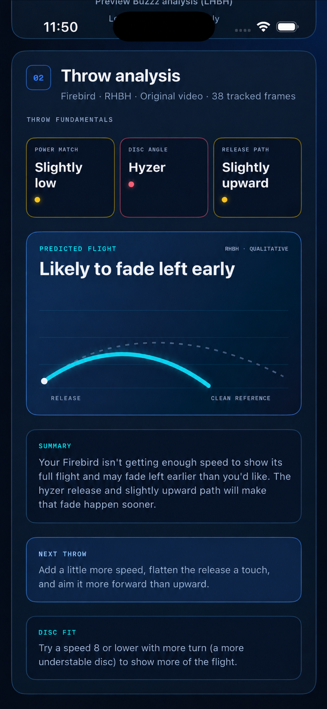
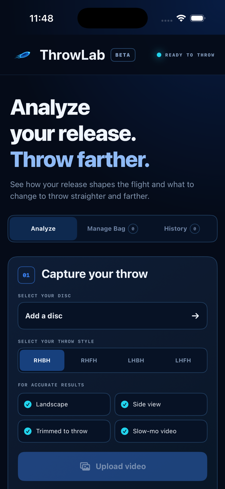
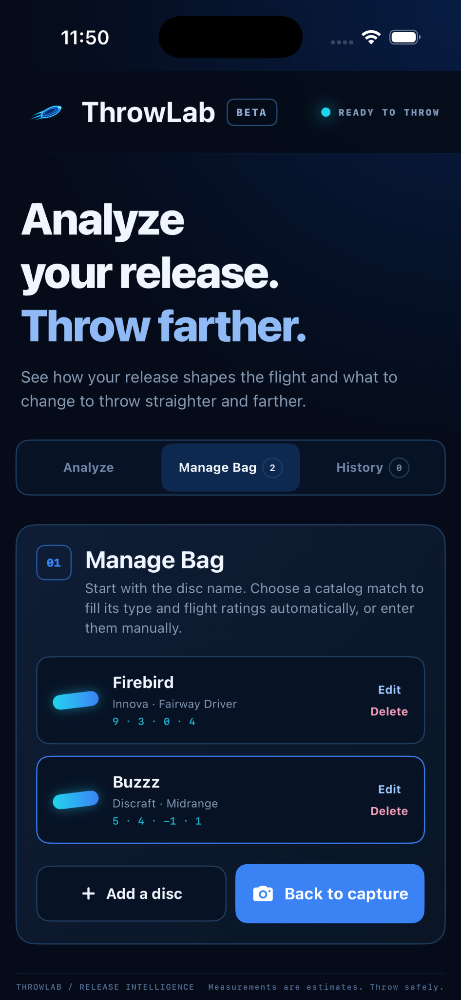
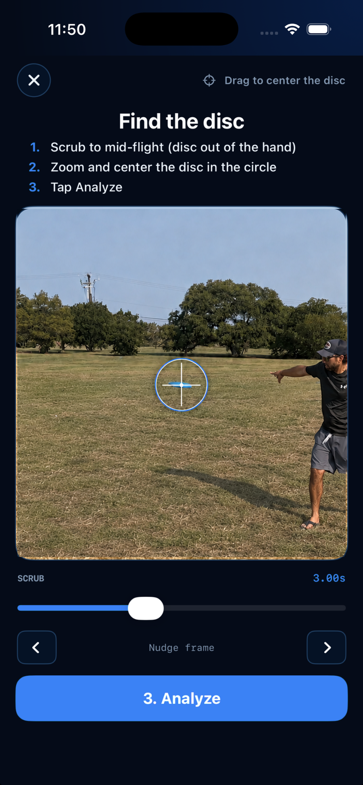
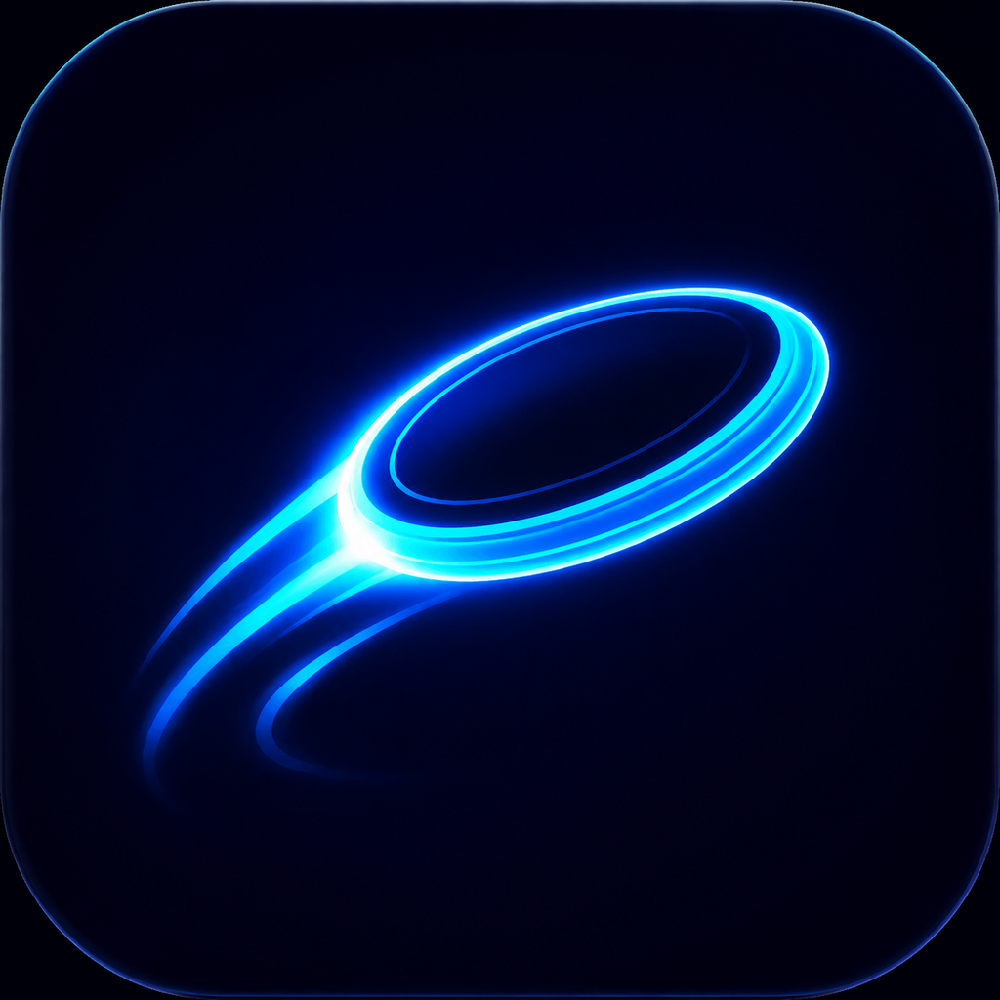

Disc golf analyzer app for iPhone
Analyze your release.
Dial in your throw.
ThrowLab uses slow-motion video to evaluate your speed, disc angle, and release path, then shows you what to adjust and tracks your progress over time.
For iPhone · Available on the App Store
- Free 3-day trial
- Works in a field or into a net
- Video stays on your iPhone
- No extra hardware


Release analysis
Understand your release.
Choose your disc, throwing style, and intended line before you analyze. ThrowLab evaluates speed, disc angle, and release path against the target for that throw.
Relative to the selected disc and throw.
From anhyzer through flat to hyzer.
Downward, flat, or upward in early flight.
Results are relative ratings, not exact miles per hour or degree measurements.
Progress and practice sessions
See how your throws are trending.
Throws with the same disc, throwing style, and intended line are tracked together. Throws made in the same practice window are grouped into a session so you can review them together.
Only throws with the same disc, throwing style, and intended line count toward each other, so your targets reflect one throw, not an average across your whole bag.
- Sessions form automatically from your practice window
- Targets start at 5 qualifying throws, then expand to 10
- Speed, angle, and path are tracked as separate hit rates
Speed: Matched · Disc angle: Flat · Release path: Flat
Speed: Matched · Disc angle: Slightly hyzer · Release path: Flat
Speed: Slightly low · Disc angle: Flat · Release path: Flat
Speed: Slightly low · Disc angle: Flat · Release path: Slightly upward
Speed: Matched · Disc angle: Slightly hyzer · Release path: Flat
Speed: Matched · Disc angle: Flat · Release path: Flat
Speed: Slightly low · Disc angle: Hyzer · Release path: Flat
Speed: Matched · Disc angle: Flat · Release path: Flat

Your discs
Manage your bag.
Add each disc you throw and ThrowLab remembers its flight numbers, so every analysis is measured against the right disc instead of a generic average.
Every disc you throw, with speed, glide, turn, and fade at a glance.
Search more than 2,400 discs to find a match by flight numbers.
Replace a worn or lost disc without losing its throw history.
How it works
How ThrowLab works.
Set up the throw, record in slow motion, then find the disc and let ThrowLab do the rest.
- 01
Set the throw
Choose your disc, throwing style, and intended line.
- 02
Record in slow motion
Use a trimmed landscape clip with the full throw visible from the side.
- 03
Find the disc
Move to a clear early-flight frame, center the disc, and tap Analyze.
- 04
Review and repeat
Review the release and progress, then add another throw to the session.

Recording setup
Give ThrowLab a clear view of the release.
A few habits make the difference between a clean read and a missed one.
About accuracy: Results are estimates derived from video. Camera position, lighting, framing, blur, frame rate, and disc visibility can affect the result.
Questions
Before your first throw.
What does ThrowLab analyze?
ThrowLab analyzes speed, disc angle, and release path from slow-motion video. The gauges show relative ratings against target ranges rather than exact miles per hour or degree measurements.
How does progress tracking work?
Only throws with the same disc, throwing style, and intended line are compared. ThrowLab tracks target hits for speed, disc angle, and release path separately.
How are practice sessions created?
Throws made within the same practice window are grouped automatically. You can have more than one session in a day without using a start or stop button.
Does it support forehand and left-handed throws?
Yes. ThrowLab supports RHBH, RHFH, LHBH, and LHFH, plus straight, hyzer, and anhyzer intended lines.
Can I use it with a practice net?
Yes. The disc does not need to land on camera. Keep it visible for several frames after release.
Are my videos uploaded?
No. Throw videos are processed on your iPhone and are not uploaded for analysis. No account is required.
How much does ThrowLab Pro cost?
ThrowLab Pro is $4.99 per month or $39.99 per year after a 3-day free trial.

Available for iPhone
Build consistency one throw at a time.
Try every analysis feature free for 3 days. Continue for $4.99/month or $39.99/year.